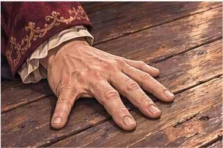
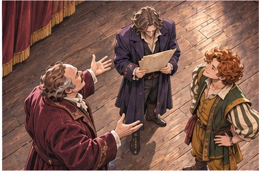
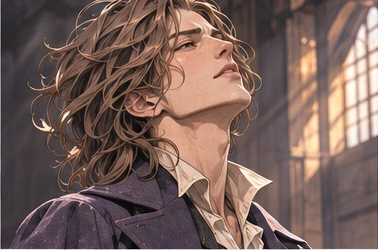
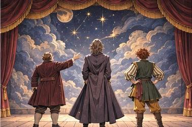

장면 02 / 28
Vorspiel auf dem Theater극장 서막
이 장의 한국어 본문 번역은 준비 중입니다. 현재는 제목·목차만 병기되어 있습니다. / Korean body translation pending.

Direktor. Theatherdichter. Lustige Person:
DIREKTOR.
Ihr beiden, die ihr mir so oft,
In Not und Trübsal, beigestanden,
Sagt, was ihr wohl in deutschen Landen
Von unsrer Unternehmung hofft?
Ich wünschte sehr der Menge zu behagen,
Besonders weil sie lebt und leben läßt.

Die Pfosten sind, die Bretter aufgeschlagen,
Und jedermann erwartet sich ein Fest.
Sie sitzen schon mit hohen Augenbraunen
Gelassen da und möchten gern erstaunen.
Ich weiß, wie man den Geist des Volks versöhnt;
Doch so verlegen bin ich nie gewesen.
Zwar sind sie an das Beste nicht gewöhnt,
Allein sie haben schrecklich viel gelesen.

Wie machen wir’s, daß alles frisch und neu
Und mit Bedeutung auch gefällig sei?
Denn freilich mag ich gern die Menge sehen,
Wenn sich der Strom nach unsrer Bude drängt,
Und mit gewaltig wiederholten Wehen
Sich durch die enge Gnadenpforte zwängt;
Bei hellem Tage, schon vor vieren,
Mit Stößen sich bis an die Kasse ficht
Und, wie in Hungersnot um Brot an Bäckertüren,
Um ein Billet sich fast die Hälse bricht.
Dies Wunder wirkt auf so verschiedne Leute
Der Dichter nur; mein Freund, o tu es heute!
DICHTER.
O sprich mir nicht von jener bunten Menge,
Bei deren Anblick uns der Geist entflieht.

Verhülle mir das wogende Gedränge,
Das wider Willen uns zum Strudel zieht.
Nein, führe mich zur stillen Himmelsenge,
Wo nur dem Dichter reine Freude blüht;
Wo Lieb und Freundschaft unsres Herzens Segen
Mit Götterhand erschaffen und erpflegen.
Ach! was in tiefer Brust uns da entsprungen,
Was sich die Lippe schüchtern vorgelallt,
Mißraten jetzt und jetzt vielleicht gelungen,
Verschlingt des wilden Augenblicks Gewalt.

Oft, wenn es erst durch Jahre durchgedrungen,
Erscheint es in vollendeter Gestalt.
Was glänzt, ist für den Augenblick geboren,
Das Echte bleibt der Nachwelt unverloren.
LUSTIGE PERSON.
Wenn ich nur nichts von Nachwelt hören sollte.
Gesetzt, daß ich von Nachwelt reden wollte,
Wer machte denn der Mitwelt Spaß?

Den will sie doch und soll ihn haben.
Die Gegenwart von einem braven Knaben
Ist, dächt ich, immer auch schon was.
Wer sich behaglich mitzuteilen weiß,
Den wird des Volkes Laune nicht erbittern;
Er wünscht sich einen großen Kreis,
Um ihn gewisser zu erschüttern.
Drum seid nur brav und zeigt euch musterhaft,
Laßt Phantasie, mit allen ihren Chören,
Vernunft, Verstand, Empfindung, Leidenschaft,
Doch, merkt euch wohl!
nicht ohne Narrheit hören.
DIREKTOR.
Besonders aber laßt genug geschehn!
Man kommt zu schaun, man will am liebsten sehn.
Wird vieles vor den Augen abgesponnen,
So daß die Menge staunend gaffen kann,
Da habt Ihr in der Breite gleich gewonnen,
Ihr seid ein vielgeliebter Mann.

Die Masse könnt Ihr nur durch Masse zwingen,
Ein jeder sucht sich endlich selbst was aus.
Wer vieles bringt, wird manchem etwas bringen;
Und jeder geht zufrieden aus dem Haus.
Gebt Ihr ein Stück, so gebt es gleich in Stücken!
Solch ein Ragout, es muß Euch glücken;
Leicht ist es vorgelegt, so leicht als ausgedacht.

Was hilft’s, wenn Ihr ein Ganzes dargebracht?
Das Publikum wird es Euch doch zerpflücken.
DICHTER.
Ihr fühlet nicht, wie schlecht ein solches Handwerk sei!
Wie wenig das dem echten Künstler zieme!
Der saubern Herren Pfuscherei
Ist, merk ich, schon bei Euch Maxime.
DIREKTOR.
Ein solcher Vorwurf läßt mich ungekränkt.
Ein Mann, der recht zu wirken denkt,
Muß auf das beste Werkzeug halten.
Bedenkt, Ihr habet weiches Holz zu spalten,
Und seht nur hin, für wen Ihr schreibt!

Wenn diesen Langeweile treibt,
Kommt jener satt vom übertischten Mahle,
Und, was das Allerschlimmste bleibt,
Gar mancher kommt vom Lesen der Journale.
Man eilt zerstreut zu uns, wie zu den Maskenfesten,
Und Neugier nur beflügelt jeden Schritt;
Die Damen geben sich und ihren Putz zum besten
Und spielen ohne Gage mit.
Was träumet Ihr auf Eurer Dichterhöhe?
Was macht ein volles Haus Euch froh?

Beseht die Gönner in der Nähe!
Halb sind sie kalt, halb sind sie roh.
Der, nach dem Schauspiel, hofft ein Kartenspiel,
Der eine wilde Nacht an einer Dirne Busen.
Was plagt ihr armen Toren viel,
Zu solchem Zweck, die holden Musen?

Ich sag Euch, gebt nur mehr und immer, immer mehr,
So könnt Ihr Euch vom Ziele nie verirren
Sucht nur die Menschen zu verwirren,
Sie zu befriedigen, ist schwer—
Was fällt Euch an? Entzückung oder Schmerzen?
DICHTER.
Geh hin und such dir einen andern Knecht!
Der Dichter sollte wohl das höchste Recht,
Das Menschenrecht, das ihm Natur vergönnt,
Um deinetwillen freventlich verscherzen!

Wodurch bewegt er alle Herzen?
Wodurch besiegt er jedes Element?
Ist es der Einklang nicht, der aus dem Busen dringt,
Und in sein Herz die Welt zurücke schlingt?
Wenn die Natur des Fadens ew’ge Länge,
Gleichgültig drehend, auf die Spindel zwingt,
Wenn aller Wesen unharmon’sche Menge
Verdrießlich durcheinander klingt;
Wer teilt die fließend immer gleiche Reihe
Belebend ab, daß sie sich rhythmisch regt?

Wer ruft das Einzelne zur allgemeinen Weihe,
Wo es in herrlichen Akkorden schlägt?
Wer läßt den Sturm zu Leidenschaften wüten?
Das Abendrot im ernsten Sinne glühn?
Wer schüttet alle schönen Frühlingsblüten
Auf der Geliebten Pfade hin?

Wer flicht die unbedeutend grünen Blätter
Zum Ehrenkranz Verdiensten jeder Art?
Wer sichert den Olymp? vereinet Götter?
Des Menschen Kraft, im Dichter offenbart.
LUSTIGE PERSON.
So braucht sie denn, die schönen Kräfte
Und treibt die dichtrischen Geschäfte
Wie man ein Liebesabenteuer treibt.
Zufällig naht man sich, man fühlt, man bleibt
Und nach und nach wird man verflochten;
Es wächst das Glück, dann wird es angefochten
Man ist entzückt, nun kommt der Schmerz heran,
Und eh man sich’s versieht, ist’s eben ein Roman.
Laßt uns auch so ein Schauspiel geben!
Greift nur hinein ins volle Menschenleben!
Ein jeder lebt’s, nicht vielen ist’s bekannt,
Und wo ihr’s packt, da ist’s interessant.
In bunten Bildern wenig Klarheit,
Viel Irrtum und ein Fünkchen Wahrheit,
So wird der beste Trank gebraut,
Der alle Welt erquickt und auferbaut.
Dann sammelt sich der Jugend schönste Blüte
Vor eurem Spiel und lauscht der Offenbarung,
Dann sauget jedes zärtliche Gemüte
Aus eurem Werk sich melanchol’sche Nahrung,
Dann wird bald dies, bald jenes aufgeregt
Ein jeder sieht, was er im Herzen trägt.
Noch sind sie gleich bereit, zu weinen und zu lachen,
Sie ehren noch den Schwung, erfreuen sich am Schein;
Wer fertig ist, dem ist nichts recht zu machen;
Ein Werdender wird immer dankbar sein.
DICHTER.

So gib mir auch die Zeiten wieder,
Da ich noch selbst im Werden war,
Da sich ein Quell gedrängter Lieder
Ununterbrochen neu gebar,
Da Nebel mir die Welt verhüllten,
Die Knospe Wunder noch versprach,
Da ich die tausend Blumen brach,
Die alle Täler reichlich füllten.
Ich hatte nichts und doch genug.
Den Drang nach Wahrheit und die Lust am Trug.
Gib ungebändigt jene Triebe,
Das tiefe, schmerzenvolle Glück,
Des Hasses Kraft, die Macht der Liebe,
Gib meine Jugend mir zurück!
LUSTIGE PERSON.
Der Jugend, guter Freund, bedarfst du allenfalls,
Wenn dich in Schlachten Feinde drängen,
Wenn mit Gewalt an deinen Hals
Sich allerliebste Mädchen hängen,
Wenn fern des schnellen Laufes Kranz
Vom schwer erreichten Ziele winket,
Wenn nach dem heft’gen Wirbeltanz
Die Nächte schmausend man vertrinket.
Doch ins bekannte Saitenspiel
Mit Mut und Anmut einzugreifen,
Nach einem selbstgesteckten Ziel
Mit holdem Irren hinzuschweifen,
Das, alte Herrn, ist eure Pflicht,
Und wir verehren euch darum nicht minder.
Das Alter macht nicht kindisch, wie man spricht,
Es findet uns nur noch als wahre Kinder.
DIREKTOR.
Der Worte sind genug gewechselt,
Laßt mich auch endlich Taten sehn!
Indes ihr Komplimente drechselt,
Kann etwas Nützliches geschehn.
Was hilft es, viel von Stimmung reden?
Dem Zaudernden erscheint sie nie.
Gebt ihr euch einmal für Poeten,
So kommandiert die Poesie.
Euch ist bekannt, was wir bedürfen,
Wir wollen stark Getränke schlürfen;
Nun braut mir unverzüglich dran!
Was heute nicht geschieht, ist morgen nicht getan,
Und keinen Tag soll man verpassen,
Das Mögliche soll der Entschluß
Beherzt sogleich beim Schopfe fassen,
Er will es dann nicht fahren lassen
Und wirket weiter, weil er muß.
Ihr wißt, auf unsern deutschen Bühnen
Probiert ein jeder, was er mag;
Drum schonet mir an diesem Tag
Prospekte nicht und nicht Maschinen.
Gebraucht das groß, und kleine Himmelslicht,
Die Sterne dürfet ihr verschwenden;
An Wasser, Feuer, Felsenwänden,
An Tier und Vögeln fehlt es nicht.

So schreitet in dem engen Bretterhaus
Den ganzen Kreis der Schöpfung aus,
Und wandelt mit bedächt’ger Schnelle
Vom Himmel durch die Welt zur Hölle.